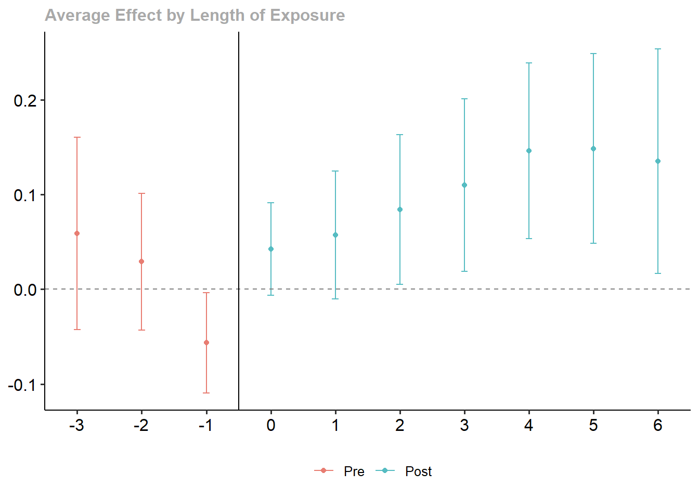

![]()
Code
pkgs <- c("plm", "feisr", "sandwich", "did", "texreg", "tidyr", "haven", "dplyr", "ggplot2", "ggforce")
lapply(pkgs, require, character.only = TRUE)pkgs <- c("plm", "feisr", "sandwich", "did", "texreg", "tidyr", "haven", "dplyr", "ggplot2", "ggforce")
lapply(pkgs, require, character.only = TRUE)sessionInfo()R version 4.3.1 (2023-06-16 ucrt)
Platform: x86_64-w64-mingw32/x64 (64-bit)
Running under: Windows 10 x64 (build 19044)
Matrix products: default
locale:
[1] LC_COLLATE=English_United Kingdom.utf8
[2] LC_CTYPE=English_United Kingdom.utf8
[3] LC_MONETARY=English_United Kingdom.utf8
[4] LC_NUMERIC=C
[5] LC_TIME=English_United Kingdom.utf8
time zone: Europe/London
tzcode source: internal
attached base packages:
[1] stats graphics grDevices utils datasets methods base
other attached packages:
[1] ggforce_0.4.1 ggplot2_3.4.2 dplyr_1.1.2 haven_2.5.3 tidyr_1.3.0
[6] texreg_1.38.6 did_2.1.2 sandwich_3.0-2 feisr_1.3.0 plm_2.6-3
loaded via a namespace (and not attached):
[1] gtable_0.3.3 xfun_0.39 htmlwidgets_1.6.2
[4] rstatix_0.7.2 collapse_1.9.6 lattice_0.21-8
[7] numDeriv_2016.8-1.1 vctrs_0.6.3 tools_4.3.1
[10] Rdpack_2.4 generics_0.1.3 parallel_4.3.1
[13] tibble_3.2.1 fansi_1.0.4 pkgconfig_2.0.3
[16] Matrix_1.5-4.1 data.table_1.14.8 lifecycle_1.0.3
[19] farver_2.1.1 compiler_4.3.1 maxLik_1.5-2
[22] munsell_0.5.0 carData_3.0-5 htmltools_0.5.5
[25] yaml_2.3.7 Formula_1.2-5 pillar_1.9.0
[28] car_3.1-2 ggpubr_0.6.0 MASS_7.3-60
[31] abind_1.4-5 nlme_3.1-162 tidyselect_1.2.0
[34] bdsmatrix_1.3-6 digest_0.6.32 purrr_1.0.1
[37] forcats_1.0.0 miscTools_0.6-28 polyclip_1.10-4
[40] fastmap_1.1.1 grid_4.3.1 colorspace_2.1-0
[43] cli_3.6.1 lfe_2.9-0 magrittr_2.0.3
[46] utf8_1.2.3 broom_1.0.5 withr_2.5.0
[49] dreamerr_1.2.3 scales_1.2.1 backports_1.4.1
[52] httr_1.4.6 rmarkdown_2.23 ggsignif_0.6.4
[55] hms_1.1.3 zoo_1.8-12 evaluate_0.21
[58] knitr_1.43 rbibutils_2.2.13 lmtest_0.9-40
[61] fixest_0.11.1 rlang_1.1.1 Rcpp_1.0.10
[64] xtable_1.8-4 glue_1.6.2 tweenr_2.0.2
[67] BMisc_1.4.5 rstudioapi_0.14 jsonlite_1.8.5
[70] R6_2.5.1 For the purpose of this exercise, we will use a real-world data set. However, instead of constructing our own data, we use a shortcut and use data from the replication package of Hospido (2012). The replication package can be found here.
THis is an unbalanced panel with 32,066 observations and 2066 individuals for the period 1968–1993 of the PSID. It consists of male heads aged 25–55 with at least 9 years of usable wages data.
# Load stata file
data.df <- read_dta("_data/h-data.dta")
# Lets order this
names <- names(data.df)
names <- c("pid", "year", names[-which(names %in% c("pid", "year"))])
data.df <- data.df[, names]
data.df <- data.df[order(data.df$pid, data.df$year), ]| variable name | description |
|---|---|
| pid | INDIVIDUAL IDENTIFIER |
| year | YEAR OF INTERVIEW |
| age | AGE OF INDIVIDUAL |
| white | WHITE DUMMY |
| dropout | DROPOUT DUMMY |
| grad | GRADUATE DUMMY |
| college | COLLEGE DUMMY |
| married | MARRIED DUMMY |
| child | NUMBER OF CHILDREN |
| fsize | FAMILY SIZE |
| hours | YEARLY HOURS OF WORK |
| logwages | LOG OF REAL ANNUAL WAGES |
| changejob | JOB CHANGE DUMMY |
| ten1 | TENURE DUMMY less than a year |
| ten2 | TENURE DUMMY a year |
| ten3 | TENURE DUMMY 2-3 years |
| ten4 | TENURE DUMMY 4 through 9 years |
| ten5 | TENURE DUMMY 10 through 19 years |
| ten6 | TENURE DUMMY 20 years or more |
| profes | PROFESSIONAL, TECHNICAL, AND KINDRED WORKERS DUMMY |
| admin | MANAGERS AND ADMINISTRATORS DUMMY |
| sales | CLERICAL AND SALES WORKERS DUMMY |
| crafts | CRAFTSMAN AND KINDRED WORKERS DUMMY |
| operat | OPERATIVES WORKERS DUMMY |
| servic | LABORERS AND SERVICES WORKERS DUMMY |
| smsa | SMSA (Standard Metropolitan Statistical Area) DUMMY |
| neast | NORTH-EAST DUMMY |
| ncentr | NORTH-CENTRAL DUMMY |
| south | SOUTH DUMMY |
| west | WEST DUMMY |
Can we use this dataset to replicate our earlier analysis on the marital wage premium? What might be a problem here?
### Lets check if variable are time-varying or constant
lapply(data.df, FUN = function(x) mean(ave(x, data.df$pid, FUN = sd)))$pid
[1] 0
$year
[1] 5.084193
$age
[1] 5.091139
$fsize
[1] 0.8707511
$hours
[1] 371.2656
$child
[1] 0.8319735
$ten1
[1] 0.2655135
$ten2
[1] 0.2251966
$ten3
[1] 0.3190326
$ten4
[1] 0.4291132
$ten5
[1] 0.3305668
$ten6
[1] 0.1446421
$changejob
[1] 0.293274
$logwages
[1] 0.2923183
$white
[1] 0.01130643
$smsa
[1] 0.1294999
$dropout
[1] 0.03838475
$grad
[1] 0.06823993
$college
[1] 0.03114909
$neast
[1] 0.01985548
$ncentr
[1] 0.02750533
$south
[1] 0.03582719
$west
[1] 0.02641131
$married
[1] 0
$profes
[1] 0.1099356
$admin
[1] 0.1295905
$sales
[1] 0.09946584
$crafts
[1] 0.1912406
$operat
[1] 0.1720871
$servic
[1] 0.1322412The variable married is time-constant and does not have any within-person variance. This is somehow not very useful, as marital status obviously is not a time-constant trait.
However, we do something similar: is there a fatherhood wage premium? In other words, do men experience an increase in wages when they become fathers?
* Restrict the age at the start (first wage) to people aged 25-35data.df <- data.df[order(data.df$pid, data.df$year), ] # just to be sure
# Person year number
data.df$pynr <- ave(data.df$year,
data.df$pid,
FUN = function(x) 1:length(x))
# Age at first wave
data.df$f_age <- ifelse(data.df$pynr == 1, data.df$age, NA)
# Distribute across individual, using mean and na.rm = TRUE
data.df$f_age <- ave(data.df$f_age,
data.df$pid,
FUN = function(x) mean(x, na.rm = TRUE))
table(data.df$f_age)
25 26 27 28 29 30 31 32 33 34 35 36 37
14803 2973 1417 1091 1155 813 743 496 715 888 678 564 653
38 39 40 41 42 43 44 45 46 47 48 49 50
618 673 709 553 549 419 398 402 365 296 47 28 20 # Restrict
data.df <- data.df[data.df$f_age <= 35,]* Use number of children to construct a binary indicator of wether the is a child in the household or notdata.df$child_hh <- ifelse(data.df$child > 0, 1, 0)
table(data.df$child, data.df$child_hh)
0 1
0 7651 0
1 0 5428
2 0 7397
3 0 3525
4 0 1207
5 0 328
6 0 158
7 0 42
8 0 15
9 0 12
10 0 8
11 0 1* Make sure we start only with men who are not yet fathers.# Child status at first wave
data.df$f_child_hh <- ifelse(data.df$pynr == 1, data.df$child_hh, NA)
table(data.df$f_child_hh) # More than 1,500 individuals are already child_hh from the start on
0 1
748 859 # Distribute across individual, using mean and na.rm = TRUE
data.df$f_child_hh <- ave(data.df$f_child_hh,
data.df$pid,
FUN = function(x) mean(x, na.rm = TRUE))
table(data.df$f_child_hh)
0 1
11424 14348 # Drop those who are child_hh from the start
data.df <- data.df[data.df$f_child_hh == 0, ]Note: this feels like dropping a lot of information! However, it makes sense if we want to correctly identify the effect of interest.
* Do we need to drop observations where people go from child to no child?data.df <- data.df[order(data.df$pid, data.df$year), ]
# Change in child status within an id
data.df$fd_child_hh <- ave(data.df$child_hh,
data.df$pid,
FUN = function(x) x - dplyr::lag(x, 1, default = 0)) # 0 instead of NA for 1st year
table(data.df$fd_child_hh)
-1 0 1
143 10660 621 # There are indeed people going from child to "no child"
# It might be that children leave the households, or parents get divorced?
# One should usually look into this more carefully, but here let's just drop those observations.
# Mark observations starting with a negative fd value (jump from marry=1 to marry =0)
data.df$notstag_child_hh <- ave(ifelse(data.df$fd_child_hh == -1, 1, 0),
data.df$pid,
FUN = function(x) cumsum(x))
table(data.df$notstag_child_hh)
0 1 2
10560 821 43 # Drop after "loosing a child"
data.df <- data.df[data.df$notstag_child_hh == 0, ]
table(data.df$fd_child_hh)
0 1
9979 581 * Calculate the effect of having a child on th wage of men (including controls if reasonable).
* Calculate effects for POLS, RE, and FE (if you have some extra time, also FEIS). (#Hint: feis needs a class `data.frame` as input data)# Age intervals
int <- seq(25, max(data.df$age), 5)
data.df$age_gr <- cut(data.df$age, int, include.lowest = TRUE)
# Formula with controls
fm <- as.formula(logwages ~ child_hh +
hours + age_gr +
profes + admin + sales + crafts + operat + servic +
smsa +
ten1 + ten2 + ten3 + ten4 + ten5 + ten6)
### POLS
mod.lm <- lm(fm, data = data.df)
### RE
mod.re <- plm(fm, data = data.df,
index = c("pid", "year"),
effect = "twoways", model = "random")
### FE
mod.fe <- plm(fm, data = data.df,
index = c("pid", "year"),
effect = "twoways", model = "within")
### FEIS
# GIven that we have a relatively large T, we can actually use the 5 tenure dummies here
mod.feis <- feis(logwages ~ child_hh +
hours + age_gr +
profes + admin + sales + crafts + operat + servic +
smsa +
as.factor(year) | ten1 + ten2 + ten3 + ten4 + ten5 + ten6, # Note we add year manually here
data = data.frame(data.df),
id = c("pid"), robust = TRUE) # we use the cluster-robust SEs right awayWarning in feis(logwages ~ child_hh + hours + age_gr + profes + admin + : FEIS needs at least n(slopes)+1 observations per group.
You specified 6 slope parameter(s) plus intercept, all groups with t <= 7 dropped* Compare using cluster robust standard errors (and screenreg).### Cluster robust SEs for RE and FE
vcov.re <- vcovHC(mod.re, cluster = "group", method = "arellano", type = "HC3")
vcov.fe <- vcovHC(mod.fe, cluster = "group", method = "arellano", type = "HC3")
# Plug into model object
mod.re$vcov <- vcov.re
mod.fe$vcov <- vcov.fe
### Compare
screenreg(list(mod.lm, mod.re, mod.fe, mod.feis), digits = 3,
custom.model.names = c("POLS", "RE", "FE", "FEIS"),
include.groups = FALSE, # don't know why include.groups = FALSE is necessary here
omit.coef = "year")
=========================================================================
POLS RE FE FEIS
-------------------------------------------------------------------------
(Intercept) 8.747 *** 8.976 ***
(0.051) (0.106)
child_hh 0.137 *** 0.101 *** 0.040 * 0.055 **
(0.010) (0.029) (0.016) (0.019)
hours 0.000 *** 0.000 *** 0.000 *** 0.000 ***
(0.000) (0.000) (0.000) (0.000)
age_gr(30,35] 0.110 *** 0.143 *** 0.008 0.027
(0.012) (0.019) (0.013) (0.015)
age_gr(35,40] 0.201 *** 0.233 *** -0.036 -0.023
(0.014) (0.030) (0.022) (0.022)
age_gr(40,45] 0.239 *** 0.282 *** -0.131 *** -0.106 ***
(0.019) (0.042) (0.031) (0.032)
age_gr(45,50] 0.251 *** 0.313 *** -0.236 *** -0.208 ***
(0.029) (0.060) (0.043) (0.046)
age_gr(50,55] 0.173 *** 0.264 * -0.426 *** -0.444 ***
(0.053) (0.107) (0.084) (0.094)
profes 0.249 *** 0.179 * 0.121 ** 0.133 **
(0.045) (0.074) (0.045) (0.045)
admin 0.250 *** 0.160 * 0.104 * 0.128 **
(0.046) (0.076) (0.045) (0.046)
sales -0.004 0.057 0.041 0.084
(0.046) (0.075) (0.046) (0.048)
crafts -0.031 0.057 0.060 0.091 *
(0.045) (0.071) (0.042) (0.044)
operat -0.178 *** 0.032 0.068 0.098 *
(0.046) (0.076) (0.045) (0.047)
servic -0.371 *** -0.028 0.021 0.057
(0.046) (0.087) (0.047) (0.048)
smsa 0.114 *** 0.023 0.018 0.026
(0.010) (0.029) (0.020) (0.021)
ten1 0.242 *** 0.112 * 0.101 *
(0.028) (0.054) (0.039)
ten2 0.382 *** 0.223 *** 0.209 ***
(0.029) (0.056) (0.038)
ten3 0.404 *** 0.275 *** 0.263 ***
(0.028) (0.054) (0.037)
ten4 0.471 *** 0.331 *** 0.308 ***
(0.027) (0.057) (0.038)
ten5 0.509 *** 0.317 *** 0.270 ***
(0.028) (0.064) (0.037)
ten6 0.536 *** 0.290 ** 0.220 ***
(0.037) (0.092) (0.043)
-------------------------------------------------------------------------
R^2 0.426 0.374 0.287 0.273
Adj. R^2 0.425 0.373 0.230 0.270
Num. obs. 10560 10560 10560 10336
s_idios 0.299
s_id 0.332
s_time 0.016
RMSE 0.313
=========================================================================
*** p < 0.001; ** p < 0.01; * p < 0.05We can interpret the results above as follows:
POLS and RE: Observations with at least one child in the household tend to have higher annual wages
FE: If men become fathers, this increases their annual wage by ~ 4%. The effect is significant (would be highly significant without cluster robust SEs).
FEIS: Given the heterogeneous wage trajectories, if men become fathers, this increases their annual wage by ~ 5%.
In this case, FEIS estimates a higher premium than FE. This could indicate that those with steeper wage trajectories actually are less likely to get children or get their children later.
Do you know why FEIS has a lower \(N\) than the other models?
data.df <- data.df[order(data.df$pid, data.df$year), ]
# Lag
data.df$lag_child_hh <- ave(data.df$child_hh,
data.df$pid,
FUN = function(x) lag(x, 2)) # lets use two years
# Lead
data.df$lead_child_hh <- ave(data.df$child_hh,
data.df$pid,
FUN = function(x) lead(x, 2)) # lets use two years
### Estimate FE models
lag.fe <- plm(logwages ~ lag_child_hh +
hours + age_gr +
profes + admin + sales + crafts + operat + servic +
smsa +
ten1 + ten2 + ten3 + ten4 + ten5 + ten6,
data = data.df,
index = c("pid", "year"),
effect = "twoways", model = "within")
lead.fe <- plm(logwages ~ lead_child_hh +
hours + age_gr +
profes + admin + sales + crafts + operat + servic +
smsa +
ten1 + ten2 + ten3 + ten4 + ten5 + ten6,
data = data.df,
index = c("pid", "year"),
effect = "twoways", model = "within")
# Compare
screenreg(list(lag.fe, lead.fe), digits = 3,
custom.coef.map = list(lag_child_hh = "Lag Child",
lead_child_hh = "Lead Child"))
====================================
Model 1 Model 2
------------------------------------
Lag Child 0.025 *
(0.011)
Lead Child 0.070 ***
(0.013)
------------------------------------
R^2 0.248 0.286
Adj. R^2 0.176 0.218
Num. obs. 9064 9064
====================================
*** p < 0.001; ** p < 0.01; * p < 0.05Interestingly we already see a significant and non-trivial fatherhood effect on the wage two years before the future father actually become fathers.
If we observe a treatment effect for a treatment that has not yet happened, this might indicate either 1) anticipation effects, or 2) that something is actually confounding our treatment (e.g. selection on pre-treatment trends)
What do you think, what might be happening here?
Can we use one of the new event-study approaches, such as the Callaway and SantAnna estimator?
# treatment timing = year if child in household
data.df$treat_timing <- ifelse(data.df$child_hh == 1, data.df$year, NA)
# Define those who never have a child
data.df$tmp <- ave(data.df$child_hh,
data.df$pid,
FUN = function(x) mean(x, na.rm = TRUE))
data.df$never_child <- ifelse(data.df$tmp == 0, 1, 0)
# set never treated to zero
data.df$treat_timing[data.df$never_child == 1] <- 0
# if married is not NA, used min year per id (removing NAs)
oo <- which(!is.na(data.df$child_hh))
data.df$treat_timing[oo] <- ave(data.df$treat_timing[oo],
data.df$pid[oo],
FUN = function(x) min(x, na.rm = TRUE))
head(data.df[, c("pid", "year", "child_hh", "never_child", "treat_timing")], n = 35)# A tibble: 35 × 5
pid year child_hh never_child treat_timing
<dbl> <dbl> <dbl> <dbl> <dbl>
1 11003 1979 0 1 0
2 11003 1980 0 1 0
3 11003 1981 0 1 0
4 11003 1982 0 1 0
5 11003 1983 0 1 0
6 11003 1984 0 1 0
7 11003 1985 0 1 0
8 11003 1986 0 1 0
9 11003 1987 0 1 0
10 11003 1988 0 1 0
# ℹ 25 more rowsatt_gt# estimate group-time average treatment effects using att_gt method
wages.attgt <- att_gt(yname = "logwages",
tname = "year",
idname = "pid",
gname = "treat_timing",
xformla = ~ hours + age_gr,
data = data.df,
allow_unbalanced_panel = TRUE,
control_group = "notyettreated",
est_method = "ipw"
)# Show the group-time specific estimates
wages.dyn <- aggte(wages.attgt, type = "dynamic", na.rm = TRUE,
min_e = -3, max_e = 6)
summary(wages.dyn)
Call:
aggte(MP = wages.attgt, type = "dynamic", min_e = -3, max_e = 6,
na.rm = TRUE)
Reference: Callaway, Brantly and Pedro H.C. Sant'Anna. "Difference-in-Differences with Multiple Time Periods." Journal of Econometrics, Vol. 225, No. 2, pp. 200-230, 2021. <https://doi.org/10.1016/j.jeconom.2020.12.001>, <https://arxiv.org/abs/1803.09015>
Overall summary of ATT's based on event-study/dynamic aggregation:
ATT Std. Error [ 95% Conf. Int.]
0.1035 0.0261 0.0523 0.1546 *
Dynamic Effects:
Event time Estimate Std. Error [95% Simult. Conf. Band]
-3 0.0589 0.0365 -0.0412 0.1589
-2 0.0292 0.0263 -0.0429 0.1013
-1 -0.0566 0.0211 -0.1144 0.0013
0 0.0424 0.0185 -0.0083 0.0930
1 0.0573 0.0236 -0.0074 0.1220
2 0.0843 0.0281 0.0073 0.1612 *
3 0.1103 0.0338 0.0175 0.2031 *
4 0.1462 0.0349 0.0506 0.2418 *
5 0.1487 0.0385 0.0430 0.2543 *
6 0.1353 0.0371 0.0336 0.2370 *
---
Signif. codes: `*' confidence band does not cover 0
Control Group: Not Yet Treated, Anticipation Periods: 0
Estimation Method: Inverse Probability Weightingzp3 <- ggdid(wages.dyn)
zp3 <- zp3 +
geom_hline(yintercept = 0, colour = gray(1/2), lty = 2) +
geom_vline(xintercept = -0.5, colour = "black", lty = 1)
zp3
The event-time results above again tell a little different story. First, hose getting father already have a little higher wage two and three years before they become fathers. Then, there is a negative anticipation effect in the year before birth (why could this be plausible?). After birth of the first child, fathers’ wages increase significantly more then the wages of non-fathers (however, this is not much more than the effect in year -3).